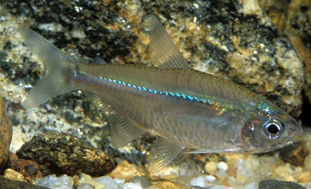
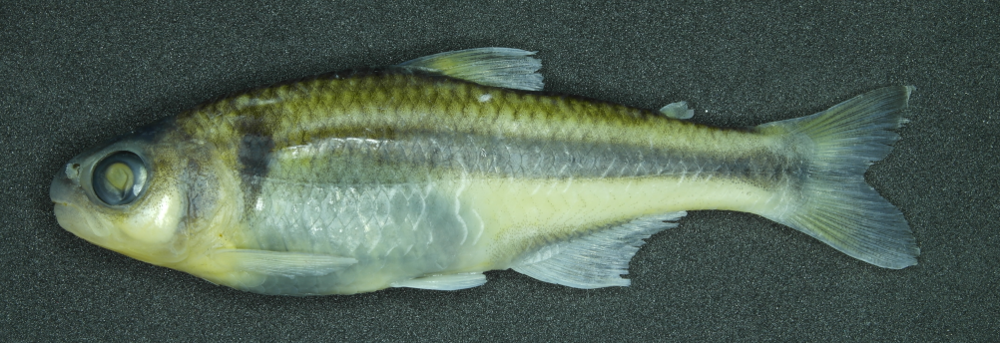
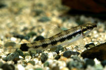
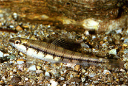
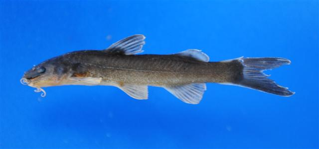
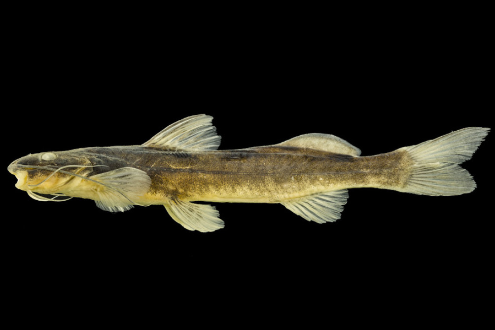
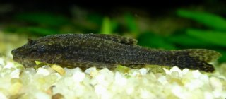
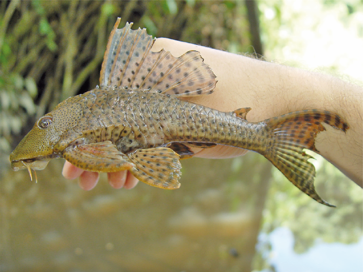

Ecologia Funcional: aplicação da álgebra matricial
1 Matriz de Atributos Morfológicos
Considere a situação em que temos 8 espécies de peixes descritas por 6 atributos funcionais (Tabela 1). Atributos funcionais são características morfológicas, fisiológicas ou comportamentais mensuráveis que influenciam diretamente o desempenho ecológico das espécies, determinando como elas interagem com o ambiente e utilizam recursos, como habitat, alimento e abrigo. Espera-se, por exemplo, que espécies similares em seus atributos funcionais ocupem um espaço de nicho semelhante e respondam de forma parecida a pressões ambientais. Nosso objetivo será quantificar o grau de similaridade entre pares de espécies por meio do índice de similaridade por cossenos.
| Traço | Bstr | Bsp | Cfasc | Czeb | Cih | Imin | Hsp | Hypsp |
|---|---|---|---|---|---|---|---|---|
| CI | 1.67 | 1.71 | 1.41 | 1.47 | 0.97 | 0.69 | 0.73 | 0.66 |
| RD | 0.21 | 0.26 | 0.21 | 0.22 | 0.17 | 0.12 | 0.16 | 0.19 |
| IVF | 0.57 | 0.53 | 0.51 | 0.49 | 0.59 | 0.55 | 0.39 | 0.35 |
| RAC | 0.14 | 0.13 | 0.14 | 0.11 | 0.22 | 0.26 | 0.19 | 0.3 |
| REP | 0.7 | 0.68 | 0.79 | 0.8 | 0.91 | 0.76 | 0.71 | 0.85 |
| MO | 1.26 | 1.74 | 3.03 | 1.98 | 2.06 | 2.24 | 3.14 | 3.14 |








Cada espécie está representada em uma coluna, e as linhas correspondem às medidas morfológicas associadas aos atributos funcionais das espécies. Em notação matricial, podemos representar a Tabela 1 como:
\[\mathbf{T} = \begin{bmatrix} 1.67 & 1.71 & \dots & 0.66\\ 0.21 & 0.26 & \dots & 0.19\\ \vdots & \vdots & \ddots & \vdots\\ 1.26 & 1.74 & \dots & 3.14 \end{bmatrix} \]
2 Calculando Similaridade por cossenos
Cada espécie na Tabela 1 pode ser vista como um vetor \(\vec{v}\) ou \(\vec{u}\) com 6 entradas, uma para cada traço funcional. Assim, o cosseno do ângulo \(\theta\) entre os vetores pode ser calculado por:
\[\cos(\theta) = \frac{\vec{v} \cdot \vec{u}}{\|\vec{v}\| \|\vec{u}\|} \tag{1}\]
Onde:
- \(\vec{v} \cdot \vec{u}\) é o produto escalar entre os vetores \(\vec{v}\) e \(\vec{u}\).
- \(\|\vec{v}\|\) e \(\|\vec{u}\|\) são as normas (comprimentos) dos vetores.
- \(\theta\) é o ângulo entre os vetores no espaço multidimensional de 6 dimensões.
O valor do \(\cos(\theta)\) funciona como um índice de similaridade cuja interpretação ecológica é direta:
- \(\cos(\theta) \approx 1\) (ângulo próximo a 0°), indica espécies com alta similaridade funcional, compartilhando estratégias ecológicas semelhantes;
- \(\cos(\theta) \approx 0\) (ângulo próximo a 90°) revela espécies ecologicamente distintas, com atributos funcionais divergentes.
3 Exemplo Prático: Similaridade entre Bstr e Bsp
- Vetores das espécies:
\[ \vec{v}_{\text{Bstr}} = \begin{bmatrix} 1.67 \\ 0.21 \\ 0.57 \\ 0.14 \\ 0.7 \\ 1.26 \end{bmatrix}, \quad \vec{u}_{\text{Bsp}} = \begin{bmatrix} 1.71 \\ 0.26 \\ 0.53 \\ 0.13 \\ 0.68 \\ 1.74 \end{bmatrix} \]
- Produto Escalar:
\[\vec{v} \cdot \vec{u} = (1.67 \times 1.71) + (0.21 \times 0.26) + \dots + (1.26 \times 1.74) = 5.899\]
Normas dos Vetores: \[\|\vec{v}\| = \sqrt{1.67^2 + 0.21^2 + \dots + 1.26^2} \approx 2.2924\] \[\|\vec{u}\| = \sqrt{1.71^2 + 0.26^2 + \dots + 1.74^2} \approx 2.6037\]
Cosseno do Ângulo: \[\cos(\theta) = \frac{5.899}{2.2924 \times 2.6037} \approx 0.988\]
4 Similaridade por Cossenos a partir de operações matriciais
Os passos do item anterior podem ser generalizados para todos os pares de espécies utilizando uma sequência de operações matriciais.
- Obtenção da Matriz de Produtos Escalares (\(\mathbf{E}\)): \[\mathbf{E} = \mathbf{T}^\top \mathbf{T}\]
\[\mathbf{T^\top} = \begin{bmatrix} 1.67 & 0.21 & \dots & 1.26\\ 1.71 & 0.26 & \dots & 1.74\\ \vdots & \vdots & \ddots & \vdots\\ 0.66 & 0.19 & \dots & 3.14 \end{bmatrix}, \quad \mathbf{E} = \begin{bmatrix} e_{11} & e_{12} & \dots & e_{18}\\ e_{21} & e_{22} & \dots & e_{28}\\ \vdots & \vdots & \ddots & \vdots\\ e_{81} & e_{82} & \dots & e_{88} \end{bmatrix} \]
- Obtenção da Matriz \(\mathbf{D}\):
As normas dos vetores de espécies da matriz \(\mathbf{T}\) podem ser obtidas a partir dos elementos da diagonal da matriz \(\mathbf{E}\), em que:
\[\text{norma}_i = \sqrt{e_{ii}}\]
Sabendo disso, obtenha a Matriz \(\mathbf{D}\):
\[\mathbf{D} = \begin{bmatrix} \frac{1}{\sqrt{e_{11}}} & 0 & \dots & 0\\ 0 & \frac{1}{\sqrt{e_{22}}} & \dots & 0\\ \vdots & \vdots & \ddots & \vdots\\ 0 & 0 & \dots & \frac{1}{\sqrt{e_{88}}} \end{bmatrix} \]
- Matriz Final de similaridade por cossenos (\(\mathbf{C}\)):
\[\mathbf{C} = \mathbf{D} \mathbf{E} \mathbf{D} \tag{2}\]
5 Roteiro: Matriz de Similaridade no Google Planilhas
Acesse sheets.google.com.
Insira os dados da tabela \(\mathbf{T}\) (Tabela 1). Se necessário, modifique o separador decimal de ponto (
.) para vírgula (,).Calcule \(\mathbf{T}^\top\).
Dica - utilize a fórmula:
=TRANSPOR()
Calcule a matriz \(\mathbf{E}\).
Dica - utilize a fórmula:
=MATRIZ.MULT()
Calcule as normas das colunas da matriz \(\mathbf{E}\) e monte a matriz diagonal \(\mathbf{D}\).
- Dica: A matriz diagonal \(\mathbf{D}\) terá as mesmas dimensões de \(\mathbf{E}\), mas será preenchida com zeros exceto na diagonal principal. Nela, os valores serão \(\frac{1}{\sqrt{e_{ii}}}\), onde \(e_{ii}\) são os elementos da diagonal principal de \(\mathbf{E}\).
Calcule a matriz \(\mathbf{C}\) conforme a Equação 2.
Dica - utilize a fórmula:
=MATRIZ.MULT()
Verificação: calcule o cosseno de \(\theta\) entre algumas espécies utilizando a Equação 1 e verifique se os resultados coincidem com os observados na matriz de similaridade \(\mathbf{C}\).
Verificação: Considerando as imagens apresentadas na Figura 1, avalie criticamente se a matriz de similaridade representa de maneira fidedigna a semelhança morfométrica entre as espécies.